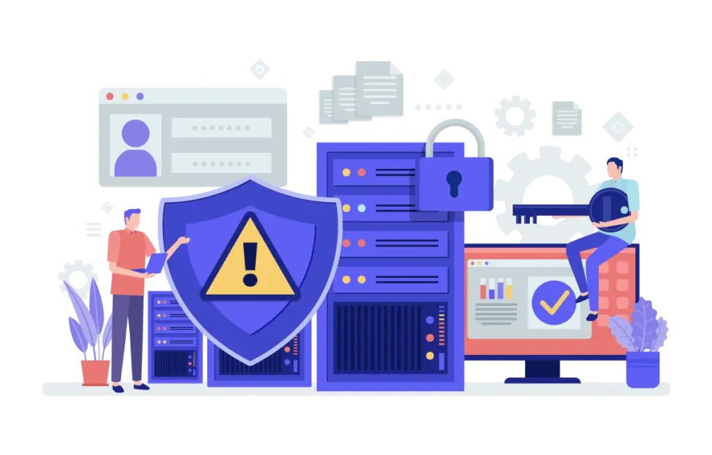
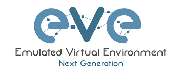
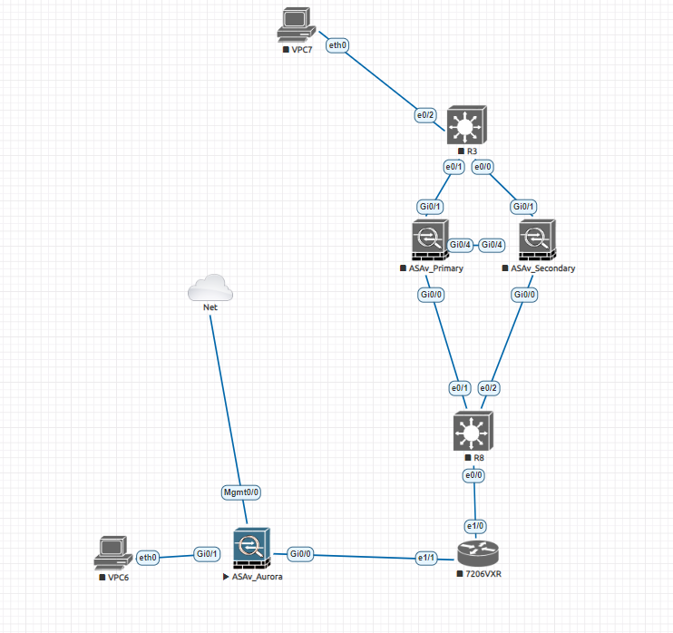

Compétences AC - Administrer les réseaux
- AC11.01 | Lois fondamentales de l’électricité ( BUT 1 )
- AC11.02 | Architecture des systèmes numériques, codage et Internet ( BUT 1 )
- AC11.03 | Configuration de base d’un réseau local ( BUT 1 )
- AC11.04 | Systèmes d’exploitation et administration des réseaux ( BUT 1 )
- AC11.05 | Identification des dysfonctionnements ( BUT 1 )
- AC11.06 | Installation et documentation d’un poste client ( BUT 1 )
- AC21.01 à AC21.06 | Routage dynamique, QoS, sécurité, virtualisation, services réseaux ( BUT 2 )
- AC31.01 à AC31.06 | Conception, documentation, maquette, gestion et défense de projet ( BUT 3 )
SAÉ : Sensibilisation à l’hygiène informatique et à la cybersécurité
Cette SAÉ nous a permis d’acquérir les bases essentielles de la cybersécurité : mots de passe, bonnes pratiques, gestion des droits, attaques fréquentes. L’objectif était de comprendre l’importance de la sécurité numérique, dans un contexte professionnel comme personnel.


SAÉ : S’initier aux réseaux informatiques
À travers un travail sur EVE-NG, nous avons conçu un réseau avec serveur DHCP, commutateurs et routeurs, en configurant les IP, le routage, les VLANs, etc. Ce travail a permis de comprendre l’adressage IP et la configuration de réseaux d’entreprise simulés.

